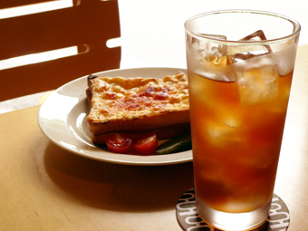
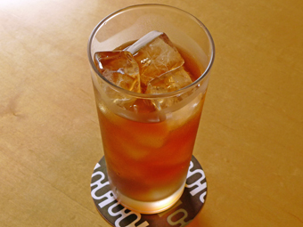
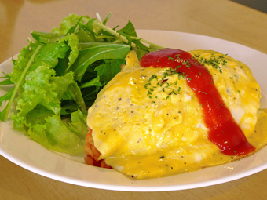
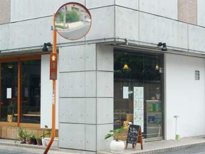

SHOP INFORMATIONフューチャーヒャクカフェ
人との交流を楽しむギャラリーカフェ

コンクリート打ちっぱなしが印象的なビルの1階にある「フューチャーヒャクカフェ」。
メープルのカラーを基調としたシンプルで落ち着ける雰囲気。
店内には、オーナーがスウェーデンやフィンランドで買ってきた置物やマグカップなどがディスプレイされ、北欧の雰囲気を演出しています。
内装はオーナーがデザイン。
若い作家の作品公開の場
「フューチャーヒャクカフェ」は、13年間喫茶店で修行をしてきたオーナーが、2007年3月にオープンさせたギャラリーカフェ。「若い作家さんたちの交流の場になれば」という思いで展示スペースを提供。イラストの展示やハンドメイド作家の展示、帽子の展示などジャンルは様々。県外作家さんの展示も多いのだとか。
オーナーこだわりの紅茶

「フューチャーヒャクカフェ」のイチオシは、オーナーが13年間勉強をしたという紅茶。ダージリンやアッサム、アールグレイなどのホットティーや、夏限定のオレンジアイスティーなど、約8種類ほどの紅茶が楽しめます。常連さんには「美味しい紅茶が飲める店」と、認識されています。
おすすめはクロックムッシュ
紅茶に合う食事やスイーツも楽しめます。中でもオーナーおすすめのメニューは、パンにベジャメルソースとロースハムをはさみ、チーズをトッピングして焼いたクロックムッシュ。ベジャメルソースはオーナーのお手製。とろけるチーズと新鮮なハムの味が口の中いっぱいに広がります。スイートピクルスや地場産のミニトマト、オーナーが店先で育てたというミニ大根が付け合せに盛られています。ボリュームがあるので、モーニングやブランチにもうってつけ。
ここでしか味わえないメニュー

「他では食べられないような珍しいものを」ということで作られた「ブラックオリーブ入りオムライス」は、ランチに最適なオーナーのオリジナルメニュー。夏限定の「中華風ヘルシーそうめん」という、これもまた珍しいオリジナルメニューで、トマトジュースと麺つゆをブレンドして作ったつゆに、紅茶を隠し味として少し入れている。これが意外な美味しさで好評。
ついつい長居したくなる、リラックスカフェへ

お店は倉敷駅から歩いて10分ほどの場所にあります。
商店街からは少し離れていて、ゆったりと居心地の良い空気が流れる「フューチャーヒャクカフェ」。
カウンターでオーナーと会話を楽しんだり、天気のいい日には、気持ち良い光が差し込む窓辺のソファでくつろぐのもいいですね。
Googleマップでみる
一覧に戻る